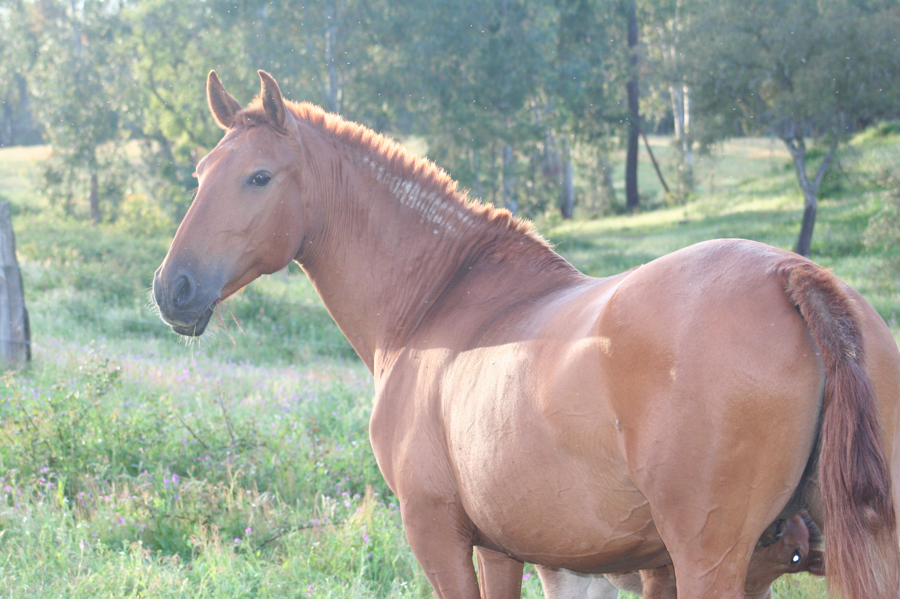

Assento I · Finais do Séc. XIX
A Fundação da Coudelaria Oliveira e Sousa
As Lezírias Ribatejanas · Força, Aprumos e Serenidade
Fundada no final do século XIX nas ricas lezírias ribatejanas, a Coudelaria Oliveira e Sousa nasceu das severas exigências do trabalho agrícola e do manejo do gado nas campinas. Cavalos e éguas eram imprescindíveis para puxar trenós nos arrozais e conduzir as lides sob o calor do Ribatejo.
Esta seleção empírica mas implacável fixou uma estrutura óssea sólida, aprumos irrepreensíveis e um temperamento calmo e generoso, fornecendo a base de sustentação zootécnica essencial à estirpe moderna.
